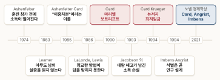

1장. 설계로 원인을 찾는다 — 경제학자 David Card의 노벨상 수상 강의#
강의: David Card, “Design-Based Research in Empirical Microeconomics” · 2021년 12월 8일 녹화 공개, American Economic Review 112권 6호(2022)에 실림 · Alan Krueger, John DiNardo, Robert LaLonde를 기리며
한 줄로#
1980년대의 노동경제학자들은 실증 연구를 아무도 믿지 않는다는 것을 깨닫고, 원인을 밝히는 길을 “모형을 정교하게”에서 “비교를 투명하게”로 바꿨다. Card는 그 전환을 자기 연구 둘(마리엘 보트리프트, 뉴저지 최저임금)로 보여 주고, 이런 연구가 왜 아직 필요한지 말한다.

그림. 강의가 언급하는 연구를 연도 순으로 놓았다. 진홍은 Card 자신의 자연실험 두 편이다. 간격은 연도에 비례하지 않는다.
강의의 흐름#
① 아무도 실증을 믿지 않았다. 1970년대 말, 대규모 거시 모형들이 물가와 실업을 맞히지 못해 버려졌다. 노동경제학도 다르지 않았다. 노조가 임금을 얼마나 올리는지 다룬 연구를 모두 검토한 Lewis (1986)는 정교한 방법보다 단순한 회귀가 더 믿을 만하다고 결론 내렸다. 한 학술지 논문을 재현해 보니 9편 가운데 2편만 그대로 재현됐다.
② 정답을 아는 시험. LaLonde (1986)는 무작위 실험으로 효과를 이미 아는 직업훈련 자료에서 실험 대조군을 버리고 당시의 최신 방법들을 적용했다. 추정값이 제각각이었고, 진짜 대조군을 보지 않고는 어느 것이 맞는지 알 수 없었다.
③ “연구 설계”라는 말. Ashenfelter and Card (1985)가 이중차분이라는 이름을 붙였다. 의학 논문 초록마다 연구 설계를 한 문장으로 적는 것을 보고, 원인을 어떤 비교에서 얻는지 밝히고 그 비교가 정당한지 점검하는 연구가 프린스턴의 방식이 됐다. Richard Freeman은 자연실험과 큰 충격을 찾으라고 했다.
④ 마리엘 보트리프트. 1980년 4월부터 10월까지 쿠바인 약 12만 5천 명이 마이애미로 건너와 노동력이 약 7% 늘었다. 그 전에 마이애미와 비슷하게 움직이던 도시들을 비교 상대로 세웠다. 마이애미의 임금과 실업률은 비교 도시들과 비슷하게 움직였다.
⑤ 뉴저지와 펜실베이니아. 1992년 4월 뉴저지의 최저임금이 시간당 4.25달러에서 5.05달러로 약 20% 올랐다. Krueger와 Card는 인상 전후로 두 주의 패스트푸드점을 직접 조사했고, 첫 조사 뒤에는 표본과 질문을 고쳐 쓸 수 없게 묶어 두었다. 뉴저지의 고용은 줄지 않았다. 거센 반발에 Card는 답한다. 임금을 정할 힘이 있는 고용주라면 작은 인상에 고용을 늘린다는 것은 1933년에 이미 알려진 이론이다.
⑥ 장점과 비판. 장점은 셋이다. 인과를 앞에 두고, 전문가가 아니어도 이해하며, 다른 곳에 옮겨 되풀이할 수 있다(마리엘 설계는 프랑스, 포르투갈, 이스라엘로 옮겨졌다). 비판도 셋이다. 비교 상대가 정해 주는 “그렇지 않았다면”이 좁고, 누가 처치를 받는지 모형으로 설명하지 않으며, 관측한 범위 밖을 말하지 못한다. Card는 모형도 자료 밖으로 멀리 나가면 틀린다고 답한다.
⑦ 문을 여는 연구. 뉴저지 연구는 당장 아무의 생각도 바꾸지 못했지만, 20년 동안 연구가 쌓여 “기업은 임금을 정할 힘이 있다”는 생각이 주류에 가까워졌다. Jacobson, LaLonde, and Sullivan (1993)의 대량 해고 연구는 해고 전 여러 해 동료와 비슷하던 소득이 해고 뒤 크게, 오래 낮아짐을 보였다. 임금은 누구 밑에서 일하느냐에도 달려 있다.
두 가지 길#
설계 기반 연구 |
모형 기반 연구 |
|
|---|---|---|
모형으로 그리는 것 |
관심 있는 결과 하나의 식 |
결과를 정하는 모든 요인 |
“그렇지 않았다면”의 출처 |
비교 그룹이 실제로 겪은 상태 |
모형이 계산한 상태 |
강점 |
투명하다, 설명하기 쉽다, 옮겨 쓸 수 있다 |
관측하지 않은 상황도 계산한다 |
약점 |
비교가 허락하는 범위만 말한다 |
가정이 틀리면 답도 틀린다 |
주: 원문의 초록, ①, ⑥을 바탕으로 정리했다. ①~⑦은 이 장의 1~7절에 대응한다.
이 장의 절#
위 강의 지도의 번호 하나가 절 하나다. 절이 완성되는 대로 하나씩 공개한다.
나머지 6개 절은 준비 중
강의영상#
절마다 저자가 그 절의 핵심을 설명하는 강의영상이 있다. 수상자의 강의 녹화가 아니다.
1. 경제학자들은 왜 서로의 실증을 믿지 않았나 — 숫자만 내놓는 블랙박스 (준비 중)